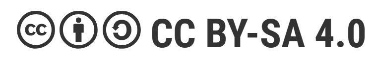

Texto

Descargar el archivo fuente
| Título | LOS ITINERARIOS FORMATIVOS |
|---|---|
| Descripción | Situación de aprendizaje para conocer los diferentes itinerarios formativos que se presentan al alumnado de cuarto de la ESO al finalizar sus estudios. |
| Autoría | |
| Licencia | Creative Commons BY-SA 4.0 |
Este contenido fue creado con eXeLearning, el editor libre y de fuente abierta diseñado para crear recursos educativos.